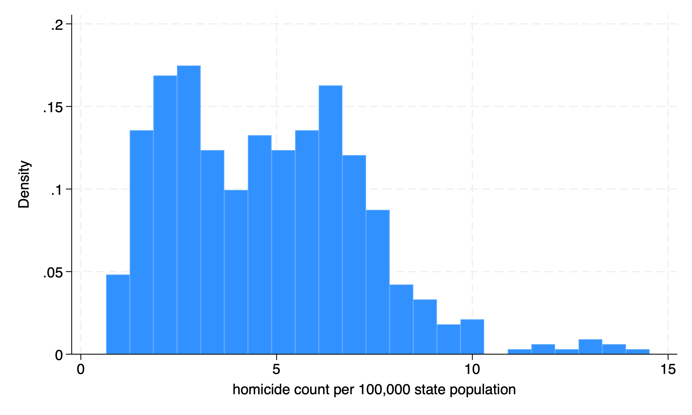
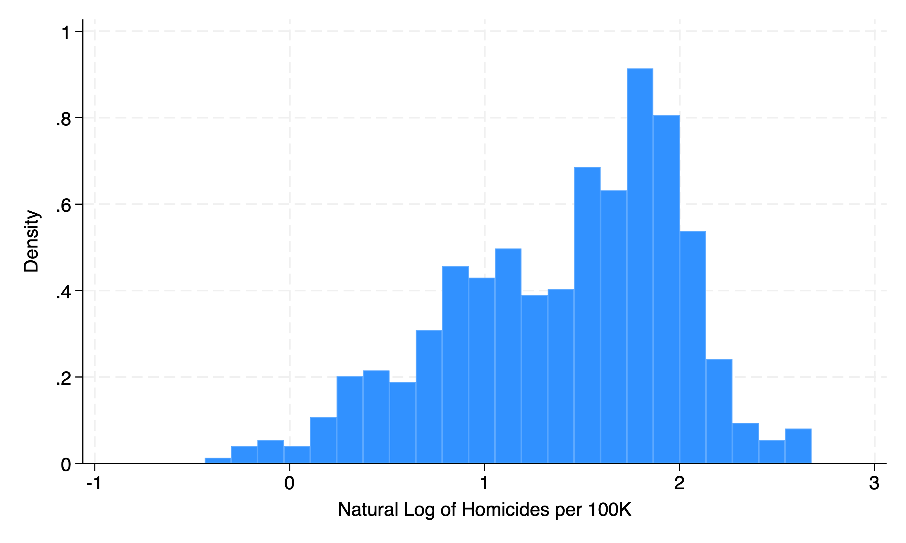

Chapter 1 Two-way Fixed Effects
1.1 Replicate Cheng and Hoesktra (2013)
We will replicate Cheng and Hoesktra (2013) in our Two-Way Fixed Effects (TWFE) example. Cheng and Hoekstra (2013) evaluate the impact of gun reform on violence with time differential adoption of gun reform after the death of Trayvon Martin in 2012.
The policy change of interest are castle-doctrine statutes (or “Stand Your Ground” laws). Between 2000 and 2010, 21 states expanded their castle-doctrine by extending the castle-doctrine to outside of the home where lethal force could legally be used. It eliminated the long-standing common law of a victim’s duty to retreat. And, if the victim felt threatened, then they could legally use lethal force.
The authors assess the reform of castle-doctrine statutes on homicides. Proponents argue that it reduces crime through deterrance, while opponents argue it increases homicides due to more guns being present. Cunningham argues that these doctrines reduce the marginal cost of manslaughter by reducing civil liability.
The authors utilize a TWFE estimator, since there are differential timings in treatment. States did not adopt castle-doctrine reform simultaneously. Therefore, we need to be concerned about comparing early treated to late treated.
Model
\[ Y_{it}=\alpha+\delta D_{it} + \gamma X_{it} + \lambda_{i} + \tau_{t}+\varepsilon_{it} \] Where
- \(Y_{it}\) is the homicide rate per \(100k\)
- \(D_{it}\) is the binary for castle doctrine present in state \(i\) at time \(t\)
- \(X_{it}\) are region-by-region fixed effects (so a treatment state’s counterfactual comes from its region)
- \(lambda_{i}\) are state fixed effects
- \(\tau_{t}\) are time fixed effects
- \(\varepsilon_{it}\) is the idiosyncratic error clustered at the state level
We have a few option for implementing Goodman-Bacon Decomposition. The first one is the bacondecomp package and the other is a post-estimation command with xtdidregress.
1.2 Inspect the data
We will import our data and inspect the outcomes and treatment variables.
/Users/Sam/Desktop/Econ 672/Data
homicide count per 100,000 state population
-------------------------------------------------------------
Percentiles Smallest
1% .9615808 .6466538
5% 1.358292 .7829468
10% 1.792752 .819343 Obs 550
25% 2.642913 .8362355 Sum of wgt. 550
50% 4.652019 Mean 4.761399
Largest Std. dev. 2.482834
75% 6.429322 13.10705
90% 7.707187 13.39059 Variance 6.164465
95% 8.774975 13.63958 Skewness .6841787
99% 12.92404 14.52561 Kurtosis 3.558378Our median homicide rate per 100K is 4.65, while the mean is 4.76.
We’ll inspect the histogram of both homicide per 100K and the natural log of homicides per 100K.
histogram homicide
histogram l_homicide, xtitle("Natural Log of Homicides per 100K")
Next, we will inspect our treatment variable of interest, which is the change in states adopting caste-doctrine statutes in state \(i\) at time \(t\).
| Year of treatment
year | 0 1 | Total
-----------+----------------------+----------
2000 | 50 0 | 50
2001 | 50 0 | 50
2002 | 50 0 | 50
2003 | 50 0 | 50
2004 | 50 0 | 50
2005 | 50 0 | 50
2006 | 49 1 | 50
2007 | 36 14 | 50
2008 | 32 18 | 50
2009 | 30 20 | 50
2010 | 29 21 | 50
-----------+----------------------+----------
Total | 476 74 | 550 We can see that 1 state adopted the policy in 2006. There were 13 more adopters in 2007, 4 more in 2008, 2 more in 2009, and 1 more in 2010. The key issue is that states did not adopt castle-doctrine statutes simultaneously.
Next, we will set up our global macros first to replicate Cheng and Hoesktra (2013). Our state level covariates, \(X_{it}\), includes demographic variables, state linear trends, region, LN of exogenous crime rates, LN of public expenditures, LN of FTE police, unemployment rates, poverty rates, LN of median state income, LN of incarceration rate, and a lag in LN of incarceration rate.
global crime1 jhcitizen_c jhpolice_c murder homicide robbery assault burglary larceny motor robbery_gun_r
global demo blackm_15_24 whitem_15_24 blackm_25_44 whitem_25_44 //demographics
global lintrend trend_1-trend_51 //state linear trend
global region r20001-r20104 //region-quarter fixed effects
global exocrime l_larceny l_motor // exogenous crime rates
global spending l_exp_subsidy l_exp_pubwelfare
global xvar l_police unemployrt poverty l_income l_prisoner l_lagprisoner $demo $spending1.3 TWFE
We will use our xtreg command to estimate the TWFE estimator.
xtset sid year
xtreg l_homicide i.year $region $xvar $lintrend post [aweight=popwt], fe vce(cluster sid)Panel variable: sid (strongly balanced)
Time variable: year, 2000 to 2010
Delta: 1 unit
note: r20004 omitted because of collinearity.
note: r20014 omitted because of collinearity.
note: r20024 omitted because of collinearity.
note: r20034 omitted because of collinearity.
note: r20044 omitted because of collinearity.
note: r20054 omitted because of collinearity.
note: r20064 omitted because of collinearity.
note: r20074 omitted because of collinearity.
note: r20084 omitted because of collinearity.
note: r20094 omitted because of collinearity.
note: r20101 omitted because of collinearity.
note: r20102 omitted because of collinearity.
note: r20103 omitted because of collinearity.
note: r20104 omitted because of collinearity.
note: trend_9 omitted because of collinearity.
note: trend_46 omitted because of collinearity.
note: trend_49 omitted because of collinearity.
note: trend_50 omitted because of collinearity.
note: trend_51 omitted because of collinearity.
Fixed-effects (within) regression Number of obs = 550
Group variable: sid Number of groups = 50
R-squared: Obs per group:
Within = 0.5851 min = 11
Between = 0.3750 avg = 11.0
Overall = 0.3208 max = 11
F(49, 49) = .
corr(u_i, Xb) = -0.9808 Prob > F = .
(Std. err. adjusted for 50 clusters in sid)
---------------------------------------------------------------------------------
| Robust
l_homicide | Coefficient std. err. t P>|t| [95% conf. interval]
----------------+----------------------------------------------------------------
year |
2001 | .0684684 .0364135 1.88 0.066 -.0047073 .141644
2002 | .07167 .0436393 1.64 0.107 -.0160265 .1593665
2003 | .1006137 .0449905 2.24 0.030 .0102019 .1910256
2004 | .1293868 .0368288 3.51 0.001 .0553766 .203397
2005 | .1605832 .0401576 4.00 0.000 .0798834 .2412829
2006 | .1743047 .0444244 3.92 0.000 .0850304 .263579
2007 | .0903824 .0452763 2.00 0.051 -.0006037 .1813685
2008 | .0017728 .043145 0.04 0.967 -.0849304 .088476
2009 | -.0830581 .0747786 -1.11 0.272 -.2333313 .067215
2010 | -.1640143 .0898474 -1.83 0.074 -.3445694 .0165409
|
r20001 | .0680535 .5230205 0.13 0.897 -.9829956 1.119103
r20002 | .1947373 .0830414 2.35 0.023 .0278593 .3616152
r20003 | -.7696014 .1386803 -5.55 0.000 -1.04829 -.490913
r20004 | 0 (omitted)
r20011 | .0245472 .4611295 0.05 0.958 -.9021273 .9512216
r20012 | .1113508 .0694829 1.60 0.115 -.0282802 .2509819
r20013 | -.7778491 .1171504 -6.64 0.000 -1.013272 -.5424266
r20014 | 0 (omitted)
r20021 | -.0562268 .4164922 -0.14 0.893 -.8931992 .7807456
r20022 | .0512223 .0767245 0.67 0.508 -.1029613 .2054059
r20023 | -.705417 .1038296 -6.79 0.000 -.9140704 -.4967636
r20024 | 0 (omitted)
r20031 | -.0539292 .3656493 -0.15 0.883 -.7887289 .6808705
r20032 | .0223513 .079209 0.28 0.779 -.1368251 .1815278
r20033 | -.6139207 .0941957 -6.52 0.000 -.803214 -.4246274
r20034 | 0 (omitted)
r20041 | -.1166739 .3168582 -0.37 0.714 -.7534244 .5200766
r20042 | -.0571238 .0757494 -0.75 0.454 -.2093478 .0951003
r20043 | -.5770167 .0883266 -6.53 0.000 -.7545157 -.3995178
r20044 | 0 (omitted)
r20051 | -.1179566 .2597649 -0.45 0.652 -.6399738 .4040606
r20052 | -.0283003 .0860598 -0.33 0.744 -.2012439 .1446434
r20053 | -.4934666 .0761714 -6.48 0.000 -.6465387 -.3403944
r20054 | 0 (omitted)
r20061 | -.1212647 .2125436 -0.57 0.571 -.548387 .3058577
r20062 | -.0400965 .076217 -0.53 0.601 -.1932604 .1130674
r20063 | -.4218767 .0664637 -6.35 0.000 -.5554405 -.2883129
r20064 | 0 (omitted)
r20071 | -.175662 .1640823 -1.07 0.290 -.5053978 .1540738
r20072 | -.0303389 .0685235 -0.44 0.660 -.1680421 .1073642
r20073 | -.22896 .0515107 -4.44 0.000 -.3324746 -.1254453
r20074 | 0 (omitted)
r20081 | -.0883956 .1177948 -0.75 0.457 -.325113 .1483218
r20082 | .0144664 .0715169 0.20 0.841 -.1292521 .1581849
r20083 | -.1562348 .0549373 -2.84 0.006 -.2666354 -.0458342
r20084 | 0 (omitted)
r20091 | -.1564882 .0699626 -2.24 0.030 -.2970834 -.0158931
r20092 | -.0250962 .0628484 -0.40 0.691 -.1513947 .1012023
r20093 | -.0734065 .0460022 -1.60 0.117 -.1658514 .0190384
r20094 | 0 (omitted)
r20101 | 0 (omitted)
r20102 | 0 (omitted)
r20103 | 0 (omitted)
r20104 | 0 (omitted)
l_police | .1083243 .0557582 1.94 0.058 -.0037259 .2203746
unemployrt | .0131937 .0120787 1.09 0.280 -.0110794 .0374668
poverty | -.0191538 .0127408 -1.50 0.139 -.0447575 .0064498
l_income | -.3124133 .1614044 -1.94 0.059 -.6367676 .0119409
l_prisoner | -.1297827 .1936936 -0.67 0.506 -.5190245 .2594591
l_lagprisoner | -.4232017 .2471395 -1.71 0.093 -.9198471 .0734438
blackm_15_24 | .0613503 .1072938 0.57 0.570 -.1542646 .2769653
whitem_15_24 | .0360048 .0271789 1.32 0.191 -.0186132 .0906227
blackm_25_44 | .2225389 .1231065 1.81 0.077 -.0248529 .4699308
whitem_25_44 | -.0277861 .0119219 -2.33 0.024 -.0517441 -.0038281
l_exp_subsidy | -.0412795 .0390496 -1.06 0.296 -.1197527 .0371937
l_exp_pubwelf~e | .0368399 .0615966 0.60 0.553 -.0869432 .160623
trend_1 | -.0927506 .012828 -7.23 0.000 -.1185295 -.0669717
trend_2 | -.0319785 .0076138 -4.20 0.000 -.047279 -.016678
trend_3 | -.0061905 .0082194 -0.75 0.455 -.0227081 .0103271
trend_4 | -.0679086 .0118405 -5.74 0.000 -.091703 -.0441142
trend_5 | -.0191227 .0064486 -2.97 0.005 -.0320816 -.0061638
trend_6 | -.0023247 .0058618 -0.40 0.693 -.0141045 .009455
trend_7 | .0324795 .0493962 0.66 0.514 -.066786 .1317449
trend_8 | -.0173139 .0200248 -0.86 0.391 -.0575552 .0229274
trend_9 | 0 (omitted)
trend_10 | -.0664576 .0098661 -6.74 0.000 -.0862842 -.046631
trend_11 | -.110019 .0136859 -8.04 0.000 -.1375219 -.0825161
trend_12 | -.0317464 .0056227 -5.65 0.000 -.0430456 -.0204472
trend_13 | .0706104 .0584627 1.21 0.233 -.0468748 .1880957
trend_14 | -.0147762 .0033377 -4.43 0.000 -.0214836 -.0080688
trend_15 | .0098776 .0108002 0.91 0.365 -.0118263 .0315815
trend_16 | .024167 .0030567 7.91 0.000 .0180244 .0303096
trend_17 | -.0028644 .0058458 -0.49 0.626 -.0146121 .0088832
trend_18 | -.0512353 .0091475 -5.60 0.000 -.0696179 -.0328527
trend_19 | -.0816524 .0128146 -6.37 0.000 -.1074044 -.0559005
trend_20 | .08712 .0239427 3.64 0.001 .0390053 .1352346
trend_21 | -.1021099 .0201221 -5.07 0.000 -.1425469 -.061673
trend_22 | .0530734 .0440093 1.21 0.234 -.0353666 .1415134
trend_23 | -.004965 .0089999 -0.55 0.584 -.023051 .0131211
trend_24 | .0035414 .0107935 0.33 0.744 -.018149 .0252318
trend_25 | -.1235853 .0149779 -8.25 0.000 -.1536846 -.093486
trend_26 | .028064 .0049028 5.72 0.000 .0182114 .0379166
trend_27 | .0177659 .0048846 3.64 0.001 .0079498 .0275819
trend_28 | .0247214 .0044727 5.53 0.000 .0157332 .0337097
trend_29 | -.0226731 .0066123 -3.43 0.001 -.035961 -.0093852
trend_30 | -.0315642 .02309 -1.37 0.178 -.0779653 .0148369
trend_31 | .0201153 .053031 0.38 0.706 -.0864544 .1266851
trend_32 | .0696669 .0570313 1.22 0.228 -.0449417 .1842756
trend_33 | -.0144914 .050741 -0.29 0.776 -.1164592 .0874764
trend_34 | -.0930385 .0124652 -7.46 0.000 -.1180882 -.0679888
trend_35 | .0741384 .0510922 1.45 0.153 -.0285353 .1768121
trend_36 | .0379958 .0058049 6.55 0.000 .0263304 .0496611
trend_37 | -.064672 .0136439 -4.74 0.000 -.0920903 -.0372536
trend_38 | .0150596 .0123384 1.22 0.228 -.0097354 .0398546
trend_39 | .045194 .0527444 0.86 0.396 -.0607998 .1511879
trend_40 | -.0233748 .0396886 -0.59 0.559 -.103132 .0563824
trend_41 | -.1005557 .0161579 -6.22 0.000 -.1330262 -.0680852
trend_42 | .1814604 .0205636 8.82 0.000 .1401363 .2227845
trend_43 | -.0967198 .0152166 -6.36 0.000 -.1272987 -.066141
trend_44 | -.1037729 .0178143 -5.83 0.000 -.1395721 -.0679736
trend_45 | -.0210785 .0055264 -3.81 0.000 -.0321841 -.0099728
trend_46 | 0 (omitted)
trend_47 | -.0872586 .0128651 -6.78 0.000 -.113112 -.0614052
trend_48 | .008802 .0059139 1.49 0.143 -.0030824 .0206865
trend_49 | 0 (omitted)
trend_50 | 0 (omitted)
trend_51 | 0 (omitted)
post | .076949 .0339377 2.27 0.028 .0087486 .1451494
_cons | 7.798651 2.359631 3.31 0.002 3.056795 12.54051
----------------+----------------------------------------------------------------
sigma_u | 2.4216987
sigma_e | .09162631
rho | .99857052 (fraction of variance due to u_i)
---------------------------------------------------------------------------------We can also use xtdidregress, which gives a concise estimate of the \(ATET\) and allows for us to test for pre-treatment trends.
xtdidregress (l_homicide i.year $region $xvar $lintrend) (post) [aweight=popwt], group(sid) time(year)note: r20004 omitted because of collinearity.
note: r20014 omitted because of collinearity.
note: r20024 omitted because of collinearity.
note: r20034 omitted because of collinearity.
note: r20044 omitted because of collinearity.
note: r20054 omitted because of collinearity.
note: r20064 omitted because of collinearity.
note: r20074 omitted because of collinearity.
note: r20084 omitted because of collinearity.
note: r20094 omitted because of collinearity.
note: r20101 omitted because of collinearity.
note: r20102 omitted because of collinearity.
note: r20103 omitted because of collinearity.
note: r20104 omitted because of collinearity.
note: trend_9 omitted because of collinearity.
note: trend_46 omitted because of collinearity.
note: trend_49 omitted because of collinearity.
note: trend_50 omitted because of collinearity.
note: trend_51 omitted because of collinearity.
Treatment and time information
Time variable: year
Control: post = 0
Treatment: post = 1
-----------------------------------
| Control Treatment
-------------+---------------------
Group |
sid | 29 21
-------------+---------------------
Time |
Minimum | 2000 2006
Maximum | 2000 2010
-----------------------------------
Difference-in-differences regression Number of obs = 550
Data type: Longitudinal
(Std. err. adjusted for 50 clusters in sid)
---------------------------------------------------------------------------------
| Robust
l_homicide | Coefficient std. err. t P>|t| [95% conf. interval]
----------------+----------------------------------------------------------------
ATET |
post |
(1 vs 0) | .076949 .0339377 2.27 0.028 .0087486 .1451494
---------------------------------------------------------------------------------
Note: ATET estimate adjusted for covariates, panel effects, and time effects.
Note: Treatment occurs at different times.From our TWFE, we find that the \(ATET\) is equal to \(0.076949\). Castle-doctrine statutes increase homicides per 100K by \((e^{.076949}-1)*100\% = 8.0\%\), which is statistically significant at the 5% level.